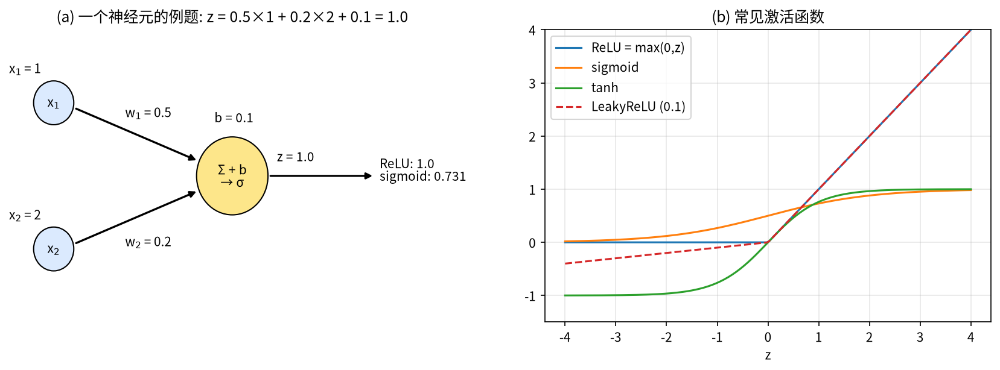
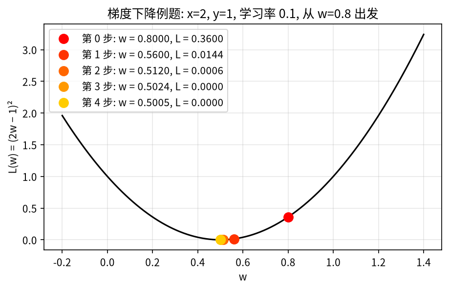
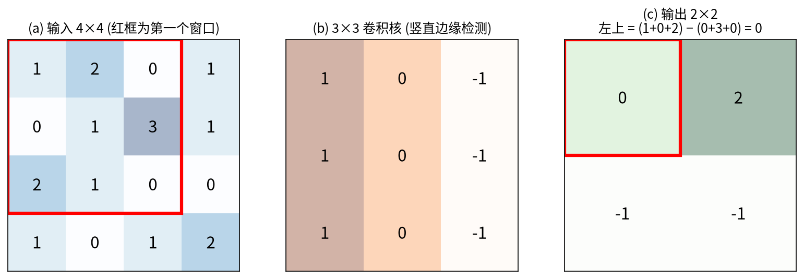
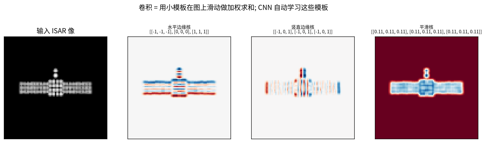

第 5 章 深度学习入门（上）：神经元、训练、卷积与 CNN¶
本章目标
- 把神经网络理解为“可学习的函数”，能手算一个神经元、一次 softmax 和交叉熵；
- 理解“训练”到底在做什么：损失 → 梯度 → 反向传播 → 梯度下降，能手算一步参数更新；
- 把 CNN 的卷积层和信号与系统里的卷积/相关对应起来，能手算一个 4×4 图像的卷积，会算参数量；
- 理解池化、批归一化、残差连接与分组卷积，知道 ResNet 为什么是论文里最常见的基线。
基础回链
本章用到的基础： 向量与矩阵乘法；函数求导与链式法则；相关与卷积（→ 第 0.6 节）。如果你从没接触过深度学习，按顺序读完本章和第 6 章就足以看懂 Part B 的每个网络框图。
本章和第 6 章只讲“够用”的部分，力求每个概念都能在 Part B 中找到用处。为了不让概念悬空，每节都先给一个可以用笔算的小例子。
5.1 神经元与多层感知机：可学习的非线性函数¶
直觉
类比：评委打分。 一个神经元像一位评委：先给每项指标一个权重（“清晰度占 0.5，构图占 0.2……”），把加权分数加起来，再加一个“基础分”，最后过一道“门槛”，分数不够就记 0。成千上万个这样的评委分层组织，前一层的打分作为后一层的输入，就是神经网络。
机理。 一个神经元接收输入向量 \(\mathbf x = [x_1,\dots,x_n]^T\)，做两步运算：
符号说明：\(\mathbf w\) 为权重向量（每个输入的重要性，要学习的参数）；\(b\) 为偏置（“基础分”，也要学习）；\(z\) 为加权和（“预激活”）；\(\sigma(\cdot)\) 为激活函数，提供非线性；\(h\) 为神经元输出。
常见激活函数：ReLU \(\sigma(z)=\max(0,z)\)，最常用；sigmoid \(\sigma(z)=1/(1+e^{-z})\)，把任意数压到 \((0,1)\)，常用来输出“权重/概率”；tanh 输出在 \((-1,1)\)；LeakyReLU / GELU / Mish / SiLU 是 ReLU 的平滑或改进版，论文中都会出现。
例题
例题 5.1（一个神经元）。 \(\mathbf x = [1, 2]^T\)，\(\mathbf w = [0.5, 0.2]^T\)，\(b=0.1\)：

一层 = 许多神经元并排。 把 \(m\) 个神经元的权重排成矩阵 \(\mathbf W\in\mathbb R^{m\times n}\)（第 \(i\) 行是第 \(i\) 个神经元的 \(\mathbf w^T\)），一层的计算就是
把几层串起来就是多层感知机（MLP）（全连接网络）：\(\mathbf h_1 = \sigma(\mathbf W_1\mathbf x+\mathbf b_1)\)，\(\mathbf h_2 = \sigma(\mathbf W_2\mathbf h_1+\mathbf b_2)\)，……
易错点
易错点：为什么一定要有非线性？ 去掉 \(\sigma\) 后，两层线性层 \(\mathbf W_2(\mathbf W_1\mathbf x) = (\mathbf W_2\mathbf W_1)\mathbf x\) 仍然只是一个线性变换，叠 100 层也一样。正是 ReLU 这样的“折一下”，让网络能拟合弯弯曲曲的分类边界。
输出层：softmax 把分数变成概率。 分类网络最后一层为每类输出一个分数 \(z_c\)（logits），再用 softmax 变成和为 1 的概率：
指数保证每个值为正，分母保证总和为 1；分数越高概率越大，差距还被“放大”了。
例题
例题 5.2（softmax）。 3 类分数 \(\mathbf z = [2, 1, 0]\)：\(e^2 = 7.389\)，\(e^1 = 2.718\)，\(e^0 = 1\)，总和 \(11.107\)，所以
于是一个分类网络就是函数 \(\hat{\mathbf y} = f_{\mathbf w}(\mathbf x)\)：输入图像 \(\mathbf x\)，输出每类的概率；网络里所有 \(\mathbf W\)、\(\mathbf b\) 合起来记作参数 \(\mathbf w\)。下一个问题是：怎么找到好的 \(\mathbf w\)？
5.2 训练：损失、梯度与反向传播¶
直觉
类比：蒙着眼下山。 损失函数 \(L(\mathbf w)\) 是一片山地，高度表示“网络错得多离谱”。你蒙着眼站在某处，只能用脚感受哪边是下坡（梯度），然后朝下坡迈一小步（学习率）。反复迈步，就会走到谷底附近。反向传播只是一种高效计算“每个参数各自的下坡方向”的方法。
5.2.1 损失函数¶
- 均方误差（回归）：\(L = (\hat y - y)^2\)；
- 交叉熵（分类）：\(L = -\log p_{y}\)，\(y\) 为真实类别，\(p_y\) 为网络给真实类别的概率。\(p_y\to1\) 时 \(L\to0\)；\(p_y\to0\) 时 \(L\to\infty\)——“猜错还很自信”会被重罚。
例题
例题 5.3（交叉熵及其梯度）。 接例题 5.2，若真实类别是第 1 类（one-hot \(\mathbf y=[1,0,0]\)）：\(L = -\ln 0.665 = 0.408\)。softmax + 交叉熵的梯度非常简洁：
含义：正确类的分数应升高（梯度为负，沿负梯度走就是增大），错误类的分数应降低。
推导 \(\mathbf p - \mathbf y\)。 由 \(L = -\log p_y = -z_y + \log\sum_j e^{z_j}\)，对 \(z_c\) 求导：
其中 \(\mathbb 1[c=y]\) 在 \(c=y\) 时为 1、否则为 0，正好是 one-hot 的 \(y_c\)。
5.2.2 梯度下降¶
关键公式
\(\eta\)：学习率（步长），论文中的“学习率 1e-4”就是它；\(\partial L/\partial\mathbf w\)：损失对参数的梯度，指向“上坡最陡”的方向，所以要减去它。
5.2.3 反向传播 = 链式法则¶
网络是函数的嵌套，求梯度靠链式法则：若 \(L\) 通过 \(\hat y\) 依赖 \(w\)，则 \(\dfrac{\partial L}{\partial w} = \dfrac{\partial L}{\partial\hat y}\cdot\dfrac{\partial \hat y}{\partial w}\)。反向传播就是从输出层开始，把“上游梯度 × 本层局部导数”一层层往回乘。
例题
例题 5.4（手算一步训练）。 最简单的“网络” \(\hat y = wx\)；样本 \(x = 2\)、\(y=1\)；初值 \(w=0.8\)；学习率 \(\eta=0.1\)；损失 \(L=(\hat y-y)^2\)。
- 前向：\(\hat y = 0.8\times2 = 1.6\)，\(L = (1.6-1)^2 = 0.36\)。
- 反向：\(\dfrac{\partial L}{\partial\hat y} = 2(\hat y-y) = 1.2\)，\(\dfrac{\partial\hat y}{\partial w} = x = 2\)，所以 \(\dfrac{\partial L}{\partial w} = 1.2\times2 = 2.4\)。
- 更新：\(w \leftarrow 0.8 - 0.1\times2.4 = 0.56\)。
- 验证：\(\hat y = 0.56\times2 = 1.12\)，\(L = 0.12^2 = 0.0144\)——损失从 0.36 降到 0.0144。
继续迭代，\(w\) 会逼近最优值 \(0.5\)（图 5-2）。真实网络有上百万个参数，但每个参数的更新方式与此完全相同。

5.2.4 训练中的常用术语¶
- mini-batch / epoch：每次用一小批样本（如 32 张）估计梯度并更新一次；所有训练样本用过一遍叫一个 epoch。
- 优化器：SGD 就是式 (5.4)；Adam、AdamW 为每个参数自适应调节步长，是论文中最常用的选择。
- 超参数：论文里的“学习率 1e-4”“权重衰减 1e-3”“每 10 个 epoch 衰减 0.1”都是人设定的训练超参数，不是学出来的。
- 过拟合：参数多、数据少时网络会“背答案”：训练集精度很高、测试集很差。ISAR 数据少，所以几乎每篇论文都在和过拟合作斗争（数据增强、预训练、少样本范式、轻量化网络）。
易错点
易错点：学习率。 太大会在谷底两侧来回跳，甚至发散；太小则下降极慢。例题 5.4 中若取 \(\eta = 0.3\)，第一步就变成 \(w = 0.8-0.72 = 0.08\)，直接跳过了最优点 0.5。
5.3 卷积：在图像上滑动的“小模板”¶
直觉
类比：拿印章逐格比对。 拿一个 3×3 的小“印章”（卷积核）在图像上从左到右、从上到下逐格盖过去，每到一个位置就算一次“印章和这块图像有多像”（对应相乘再相加）。所有位置的得分排成一张新图，叫特征图。不同的印章检测不同的花样：竖直边缘、水平边缘、亮斑……
卷积层就是信号与系统里的二维卷积（严格说是互相关，→ 第 0.6 节）：一个 \(k\times k\) 的小模板在图像上滑动做加权求和。区别在于模板系数是学出来的，而且每层有很多个模板（通道）。对单通道输入 \(X\) 和卷积核 \(K\)：
符号说明：\((i,j)\) 为输出位置；\((u,v)\) 为核内位置；\(b\) 为偏置。
例题
例题 5.5（手算 4×4 图像的卷积）。 输入与一个竖直边缘检测核（左列 \(+1\)，右列 \(-1\)）：
3×3 窗口在 4×4 图上只能放 \(2\times2\) 个位置。由于核的中间列为 0，每个结果都等于“窗口左列之和 − 窗口右列之和”：
所以 \(Y = \begin{bmatrix} 0 & 2\\ -1 & -1\end{bmatrix}\)。\(Y[0,1]=2\) 最大，说明该窗口里“左亮右暗”的竖直边缘最明显。

输出尺寸。 输入边长 \(H\)，核大小 \(k\)，四周补零 \(p\) 圈，步长 \(s\)：
例题 5.5 中 \(H=4,\ k=3,\ p=0,\ s=1\)，得 \(H_{\text{out}} = 2\)；若 \(p=1\)，输出仍为 4×4（“same”卷积）；若 \(s=2\)，尺寸约减半。
多通道与参数量。 输入有 \(C_{\text{in}}\) 个通道（如复数图像的实部/虚部是 2 个通道），每个卷积核也有 \(C_{\text{in}}\) 层，各层分别卷积后求和；有 \(C_{\text{out}}\) 个核就输出 \(C_{\text{out}}\) 个通道：
例题
例题 5.6（参数量）。 3×3 卷积，64 通道进、64 通道出：\(3\times3\times64\times64 + 64 = 36\,928\)。若改用 \(G=4\) 组的分组卷积（每组 16 进 16 出，各组独立），权重为 \(4\times(3\times3\times16\times16) = 9216\)，恰好是原来 36 864 的 \(1/4\)。

易错点
易错点。（1）深度学习框架里的“卷积”不翻转卷积核，数学上是相关；由于核是学出来的，翻不翻转没有区别。（2）卷积的两个关键性质是局部连接（每个输出只看一小块）和权值共享（同一个核用于所有位置），所以参数比全连接少得多：64×64 图像全连接到 64×64 输出需要 \(4096^2\approx1678\) 万个权重，一个 3×3 卷积核只要 9 个。
5.4 卷积神经网络（CNN）与 ResNet¶
把“卷积 → 归一化 → 激活 → 池化”重复多次，最后接全连接层与 softmax，就是 CNN。浅层检测边缘、亮点，深层把它们组合成“太阳翼”“本体”这样更抽象的模式。
CNN 的基本组件：
- 池化（max/avg pooling）：下采样、扩大感受野。例如 2×2 最大池化把 \(\left[\begin{smallmatrix}1&3\\2&0\end{smallmatrix}\right]\) 变成 \(3\)，图像边长减半；
- 批归一化 BN：把每个通道的激活归一化到零均值、单位方差，稳定训练（见例题 5.7）；
- 残差连接（ResNet）：\(\mathbf y = \mathbf x + F(\mathbf x)\)，让很深的网络也能训练。ResNet18/50 是论文中最常见的基线（DB-SSIT 的 ResNet50、MSN 的 ResNet50+RAM、CvPGT 的 CV-ResNet18）；
- 分组卷积 / 深度卷积（DW Conv）：把通道分组、各组独立卷积，参数更少（例题 5.6）。DB-SSIT 用分组卷积让“每组对应一种极化模式”，MLFR 让“每组对应一个雷达站”——这是一个很巧妙的“结构即先验”设计；
- 空洞（膨胀）卷积、可变形卷积：扩大或自适应调整采样位置（MSN RAM、REMI GEN）。
例题
例题 5.7（批归一化）。 某通道在一个 batch 里的 4 个激活值为 \([1, 2, 3, 6]\)：
- 均值 \(\mu = (1+2+3+6)/4 = 3\)；
- 方差 \(\sigma^2 = [(1-3)^2+(2-3)^2+(3-3)^2+(6-3)^2]/4 = 14/4 = 3.5\)，标准差 \(\sigma = 1.871\)；
- 归一化 \(\hat x = (x-\mu)/\sigma = [-1.069,\ -0.535,\ 0,\ 1.604]\)；
- 再乘可学习的缩放 \(\gamma\)、加偏移 \(\beta\)：\(y = \gamma\hat x+\beta\)（网络可自己决定要不要“恢复”原尺度）。
直觉
残差连接：只学“改动量”。 修改一篇文章，与其从头重写（学 \(\mathbf y\) 本身），不如在原文上做批注（学改动量 \(F(\mathbf x) = \mathbf y-\mathbf x\)）。若某一层没什么可改的，只要 \(F=0\)，输出就等于输入，不会“越改越差”。从梯度看：
即使 \(\partial F/\partial\mathbf x\) 很小，梯度也能沿单位矩阵 \(\mathbf I\) 这条“高速公路”传回浅层——这就是上百层的 ResNet 也能训练的原因。
小结
- 神经元 = 加权和 + 偏置 + 非线性（例题 5.1：\(z=1.0\)）；多层堆叠成 MLP；softmax 把分数变成概率（例题 5.2）。
- 训练 = 最小化损失：交叉熵的梯度为 \(\mathbf p-\mathbf y\)；反向传播 = 链式法则；梯度下降 \(\mathbf w\leftarrow\mathbf w-\eta\nabla L\)（例题 5.4：一步把损失从 0.36 降到 0.0144）。
- 卷积 = 滑动模板的相关运算，局部连接 + 权值共享；会用式 (5.6)(5.7) 算尺寸和参数量。
- CNN = 卷积 + BN + 激活 + 池化；ResNet 用 \(\mathbf y = \mathbf x+F(\mathbf x)\) 让深网络可训练；分组卷积能把“一组 = 一种极化 / 一个雷达站”的先验写进结构。